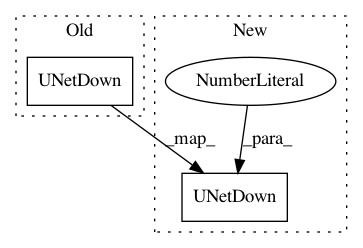

8400a6e4ab0eb1a69f641bc568ce56049a2112eb,implementations/pix2pix/models.py,GeneratorUNet,__init__,#GeneratorUNet#,49
Before Change
self.down3 = UNetDown(128, 256)
self.down4 = UNetDown(256, 512)
self.down5 = UNetDown(512, 512)
self.down6 = UNetDown(512, 512)
self.down7 = UNetDown(512, 512)
self.down8 = UNetDown(512, 512, normalize=False)
self.up1 = UNetUp(512, 512, dropout=0.5)
After Change
self.down2 = UNetDown(64, 128)
self.down3 = UNetDown(128, 256)
self.down4 = UNetDown(256, 512, dropout=0.5)
self.down5 = UNetDown(512, 512, dropout=0.5)
self.down6 = UNetDown(512, 512, dropout=0.5)
self.down7 = UNetDown(512, 512, dropout=0.5)
self.down8 = UNetDown(512, 512, normalize=False, dropout=0.5)
In pattern: SUPERPATTERN
Frequency: 3
Non-data size: 2
Instances
Project Name: eriklindernoren/PyTorch-GAN
Commit Name: 8400a6e4ab0eb1a69f641bc568ce56049a2112eb
Time: 2018-05-24
Author: eriklindernoren@gmail.com
File Name: implementations/pix2pix/models.py
Class Name: GeneratorUNet
Method Name: __init__